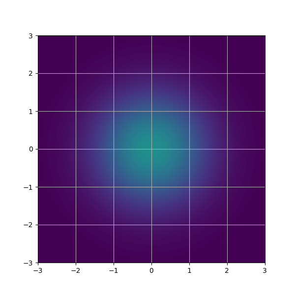
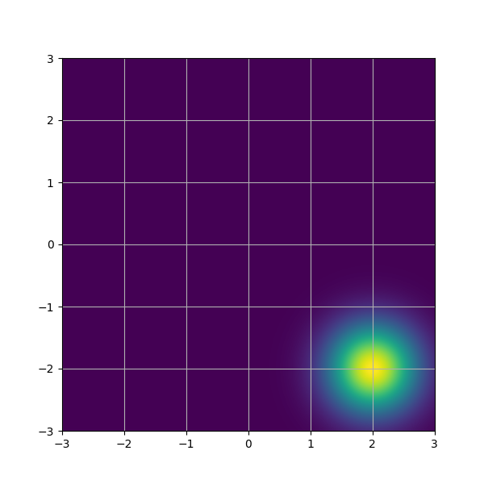
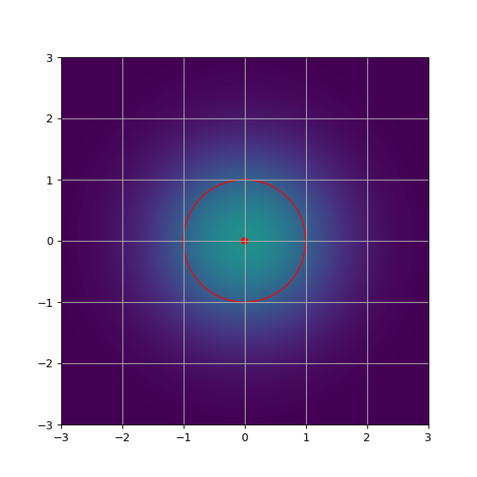
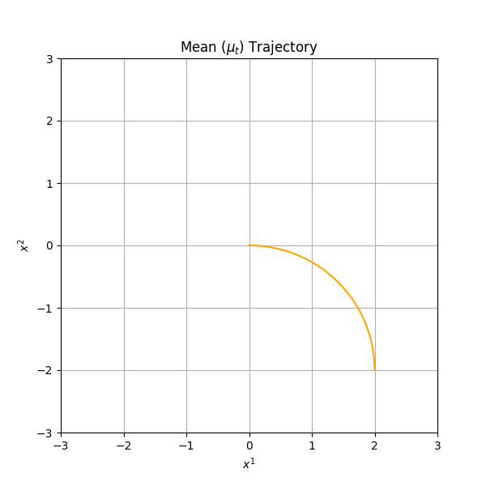
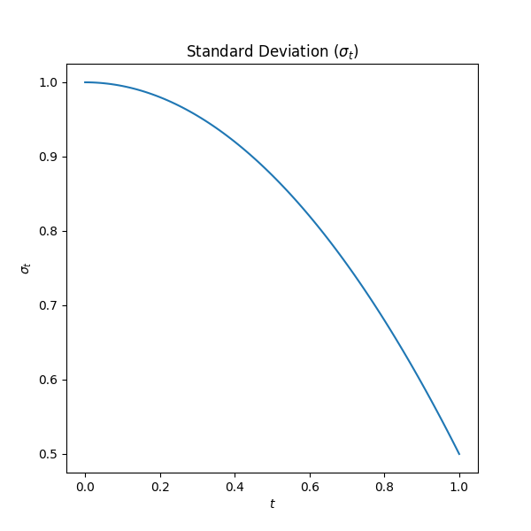
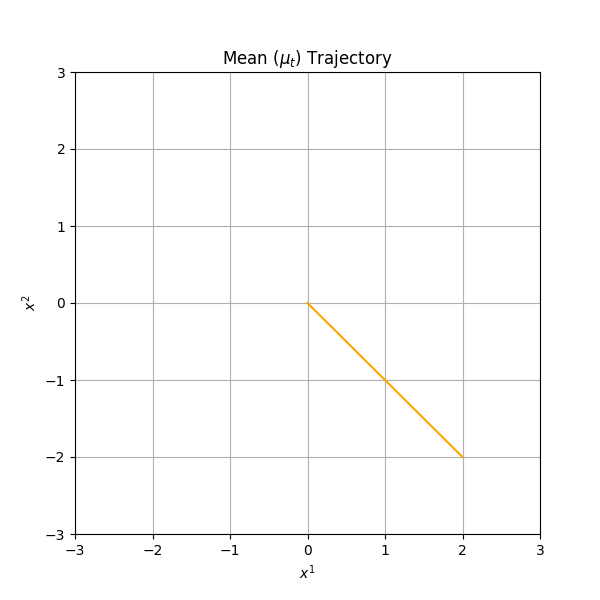
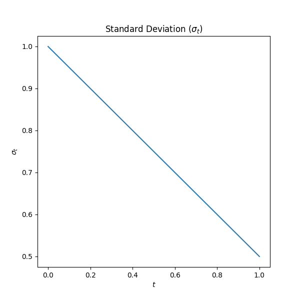

Finding a probability path between two distributions is quite involved.
Let's work on a special case first.
Does there exist a smooth probability path between two isotropic Gaussians? Say, we want:
$p_0 = \mcal{N}(\mu_0, \sigma_0^2 I)$, and
$p_1 = \mcal{N}(\mu_1, \sigma_1^2 I)$.

$\xrightarrow{\ \ \ ????? \ \ \ }$

$p_{0} = \mcal{N}((0,0), I)$
$p_{1} = \mcal{N}((2,-2), 0.5^2 I)$
An isotropic Gaussian is defined completely by its mean $\mu$ and its standard deviation $\sigma$. So, let's visualize these things.

$\xrightarrow{\ \ \ ????? \ \ \ }$
$p_{0} = \mcal{N}((0,0), I)$
$p_{1} = \mcal{N}((2,-2), 0.5^2 I)$
Here, the mean is the dot at the center, and the standard deviation is radius of the circle around the dot.
So, it is enough to specify a smooth path for the mean and a smooth path for the standard deviation, and then you would get a smooth probability path. In other words,
A smooth function $\mu_t: \Real \ra \Real^d$ that goes from $\mu_0$ and $\mu_1$ during the time period $[0,1]$.
Another smooth function $\sigma_t: \Real \ra \Real^+$ that goes from $\sigma_0$ and $\sigma_1$ during the time period $[0,1]$.
If we have these, then $$p_t = \mcal{N}(\mu_t, \sigma_t^2 I)$$ would give us the probability path we want.
For example, we can specify $\mu_t$ and $\sigma_t$ as follows.


We will get the following probability path.
For the same starting and ending distributions, there are many possible probability paths. Here's another one.


Unlike the path we showed before, this path is straight.